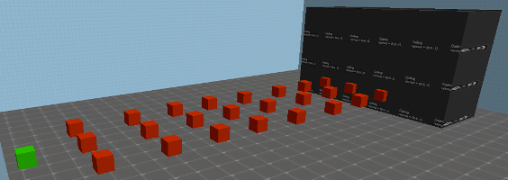

Маппинг под NotSeriousWars:
Последняя версия исходников и FGDИнформация по энтитям:
1. towers_spawn - энтитя которая является местом появления жуков. 2.1. towers_move (Старая версия модификации) - по этим энтитям жуки двигаются (напоминает Path_track). Обратите внимание, что под этими порядковыми энтитями должна быть браш энтитя towers_path.
2.1. towers_move (Старая версия модификации) - по этим энтитям жуки двигаются (напоминает Path_track). Обратите внимание, что под этими порядковыми энтитями должна быть браш энтитя towers_path.
 2.2. towers_move (Последняя версия модификации) - по этим энтитям жуки двигаются (напоминает Path_track). Используется 3 энтити на одну позицию, для случайного движения противника (См. схему 1 и Рис. 1). Обратите внимание, что количество этих энтить обязательно должно быть кратно трём и под ними должна быть браш энтитя towers_path.
Схема 1:
ФИНИШ
|7 8 9|
|4 5 6|
|1 2 3|
СТАРТ
Рисунок 1:
2.2. towers_move (Последняя версия модификации) - по этим энтитям жуки двигаются (напоминает Path_track). Используется 3 энтити на одну позицию, для случайного движения противника (См. схему 1 и Рис. 1). Обратите внимание, что количество этих энтить обязательно должно быть кратно трём и под ними должна быть браш энтитя towers_path.
Схема 1:
ФИНИШ
|7 8 9|
|4 5 6|
|1 2 3|
СТАРТ
Рисунок 1: 3. towers_nobuild - браш энтитя которая блокирует возможность строительства башен в той или иной зоне.
 4. towers_castle - если жук дотрагивается до этой браш энтити, то у замка отнимается 1 единица жизни. Когда количество жизней замка упадёт до нулевой отметки, замок
будет разрушен , а игра окончена, но у игрока будет возможность начать раунд заново.
4. towers_castle - если жук дотрагивается до этой браш энтити, то у замка отнимается 1 единица жизни. Когда количество жизней замка упадёт до нулевой отметки, замок
будет разрушен , а игра окончена, но у игрока будет возможность начать раунд заново.
 5. towers_path - браш энтитя по которой жуки могут передвигаться. Используется вместе с towers_move энтитей. Обратите внимание на то, что у каждой такой энтити должен быть свой центр, а не обший центр со всеми остальными подобными энтитями!
5. towers_path - браш энтитя по которой жуки могут передвигаться. Используется вместе с towers_move энтитей. Обратите внимание на то, что у каждой такой энтити должен быть свой центр, а не обший центр со всеми остальными подобными энтитями!